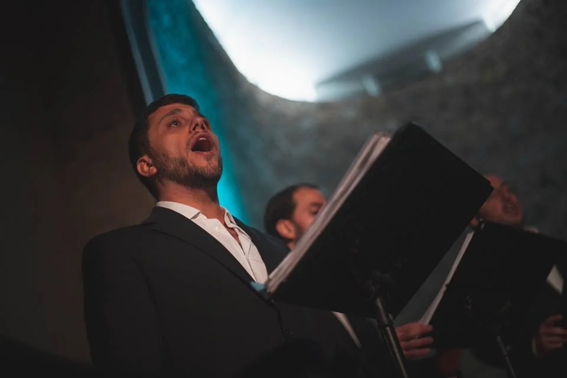

Fraternidade
Um ensemble onde a relação humana sustenta o trabalho musical.

Ensemble vocal masculino
Fraternidade, presença e repertório para vozes masculinas.
Porquê este nome?
Hirmandade partilha a raiz com “irmandade” e com o espanhol “hermandad”: o latim germanitas, de germanus, o irmão de sangue. Na Idade Média ibérica, as irmandades eram ligas de pessoas que se uniam, muitas vezes sob proteção real, para se defenderem e restabelecerem a justiça — um pacto entre diferentes que escolhem tornar-se uma força comum. É esse espírito que dá nome ao ensemble: pessoas diferentes que encontram um lugar comum. Num ensemble de vozes masculinas existe uma sonoridade particular, mas o verdadeiro interesse está muito para além da extensão vocal. É aprender a escutar. Confiar. Sustentar outra voz. Ter presença sem precisar de ocupar todo o espaço. Tenores, barítonos e baixos constroem juntos uma cor que nenhuma dessas vozes conseguiria produzir isoladamente. O repertório explora diferentes linguagens, épocas e culturas, trabalhando técnica vocal, afinação, interpretação e identidade de ensemble. Não se trata de cantar ao lado de outros homens. Trata-se de construir alguma coisa com eles.
Vozes masculinas · 15+
Hirmandade é o ensemble de vozes masculinas da VoxLaci, para cantores a partir dos 15 anos, com ensaios à segunda-feira (21h15–22h30) no Seminário Torre d'Águilha, em São Domingos de Rana, Cascais.
Hirmandade reúne cantores masculinos com mais de 15 anos num ensemble dedicado à técnica, repertório e construção de um som comum. Como em toda a VoxLaci, ser amador tem aqui o sentido mais antigo da palavra: aquele que ama.
Porque cantar aqui
Um ensemble onde a relação humana sustenta o trabalho musical.
Desenvolvimento das diferentes tessituras masculinas.
Projetos e atuações com identidade própria.
A sua voz começa aqui
Outros caminhos